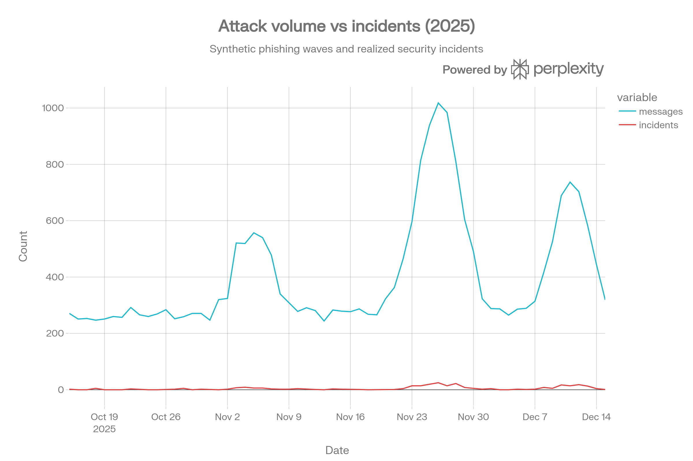
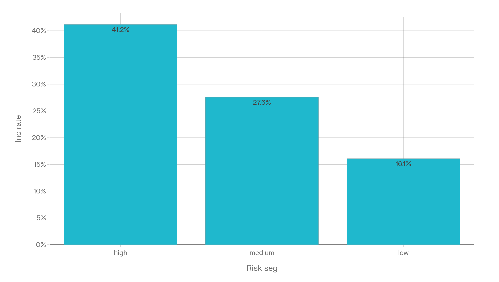
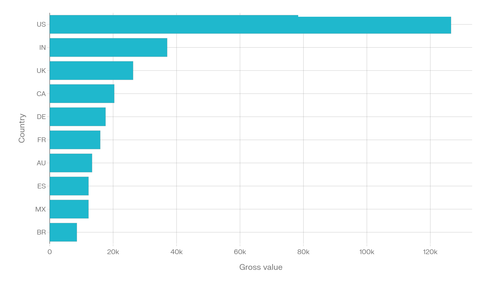

8
Cleaned core tables
Customers, messages, interactions, logins, orders, incidents, campaigns, and exposures.
I designed this case study to present phishing analysis clearly and accessibly. The layout reduces visual fatigue so reviewers can focus on findings, while the data sources, methods, and limitations remain explicit and easy to inspect.
I redesigned this case study to balance visual clarity with analytical rigor. The page reduces visual fatigue so readers can focus on what matters—the data and the decisions it supports—while keeping methods and limitations clearly stated.
Customers, messages, interactions, logins, orders, incidents, campaigns, and exposures.
The dataset is filtered to a consistent analysis window of 2025 data.
The analysis traces suspicious logins and fraud orders back to phishing exposure within a defined post-exposure window.
Interactive notebooks provide a reproducible narrative for the pipeline and the phishing attribution story.
Column names were normalized, timestamps parsed, booleans standardized, duplicate rows removed, and orphan records filtered before downstream SQL and Python analysis.
The workflow was designed like a senior-analyst prep layer: validate keys first, align time windows second, standardize field types third, and only then compute metrics and stakeholder outputs.
Soft backgrounds reduce fatigue, while translucent cards preserve enough contrast for professional reading.
I placed the charts inside subtle, translucent panels to reduce visual clutter and make trends easier to read. Each chart includes a concise caption so the visual and its takeaway stay aligned.



I've kept concrete technical artifacts—example SQL, schema notes, and query outputs—so anyone reviewing the work can validate the analysis behind the visuals.
-- Trust & Safety portfolio project SQL
-- Load cleaned CSVs into your warehouse as tables with matching names.
-- 1) Daily phishing message volume
SELECT DATE(received_ts) AS event_date, COUNT(*) AS messages_sent
FROM fact_phishing_messages_clean
GROUP BY 1
ORDER BY 1;
-- 2) Daily incidents
SELECT DATE(incident_ts) AS event_date, COUNT(*) AS incidents
FROM fact_security_incidents_clean
GROUP BY 1
ORDER BY 1;
-- 3) Incident rate by customer risk segment
WITH incident_customers AS (
SELECT DISTINCT customer_id
FROM fact_security_incidents_clean
)
SELECT c.risk_segment,
COUNT(DISTINCT c.customer_id) AS customers,
COUNT(DISTINCT i.customer_id) AS incident_customers,
1.0 * COUNT(DISTINCT i.customer_id) / COUNT(DISTINCT c.customer_id) AS incident_rate
FROM dim_customer_clean c
LEFT JOIN incident_customers i
ON c.customer_id = i.customer_id
GROUP BY 1
ORDER BY incident_rate DESC;
-- 4) Suspicious logins and fraud orders after phishing exposure
SELECT
c.customer_id,
COUNT(DISTINCT CASE WHEN la.is_flagged_suspicious THEN la.login_id END) AS suspicious_logins_after_phish,
COUNT(DISTINCT CASE WHEN o.is_fraud_related THEN o.order_id END) AS fraud_orders_after_phish
FROM dim_customer_clean c
JOIN fact_phishing_messages_clean m
ON c.customer_id = m.customer_id AND m.label_is_phishing = TRUE
LEFT JOIN fact_login_activity_clean la
ON la.customer_id = c.customer_id
AND la.login_ts >= m.received_ts
AND la.login_ts <= m.received_ts + INTERVAL '2 days'
LEFT JOIN fact_orders_clean o
ON o.customer_id = c.customer_id
AND o.order_ts >= m.received_ts
AND o.order_ts <= m.received_ts + INTERVAL '3 days'
GROUP BY c.customer_id
ORDER BY fraud_orders_after_phish DESC, suspicious_logins_after_phish DESC;My goal was to make the study engaging for reviewers while keeping the recommendations practical. The suggested actions focus on measurable Trust & Safety improvements informed by the analysis.
Retain the “synthetic but behaviorally realistic” phrasing prominently so the aesthetic never feels like it is hiding the source quality.
The overall page now looks stronger, but the chart visuals themselves should be restyled in a future pass to better match the softer palette.
This version is better for portfolio browsing because it feels more curated, more human, and less like a generic BI export.